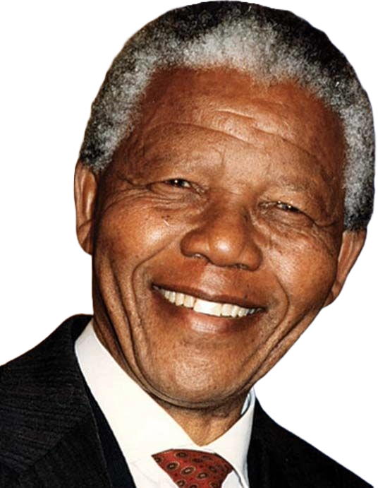

O Paradigma da Inclusão Social
O conceito contemporâneo de inclusão de pessoas com deficiência exige uma mudança radical na estrutura da sociedade. Não se trata mais de fazer com que a pessoa se adapte ao mundo, mas sim de garantir que as estruturas físicas, digitais e atitudinais eliminem qualquer barreira de acesso.
" A educação é armar mais poderosa que você pode usar para mudar o mundo." — Nelson Mandela, Político e Activista
" A inclusão não é dar as pessoas o privilegio de participar do mundo, mas sim reconhecer que elas já fazem parte dele." —Augusto Cury
A Perspectiva Biopsicossocial
A visão moderna que define a deficiência abandonou o modelo puramente médico. Hoje entende-se que ela resulta da interação entre os impedimentos do corpo e as barreiras que a própria sociedade cria no dia a dia.
Quebrando Barreiras Atitudinais
A pior barreira para uma pessoa com necessidades especiais frequentemente não é a escada física, mas sim o preconceito estrutural e o capacitismo que duvidam de seu potencial cognitivo e profissional.
O Papel do Meio Acadêmico
Estudos indicam que turmas escolares e ambientes corporativos que acolhem a diversidade desenvolvem níveis significativamente mais altos de empatia, inteligência socioemocional e inovação técnica.
Pensamento Coletivo
Construir um site responsivo e de alto contraste é um passo inicial. O design universal visa beneficiar a todos: idosos, pessoas temporariamente acidentadas e indivíduos com deficiências permanentes.